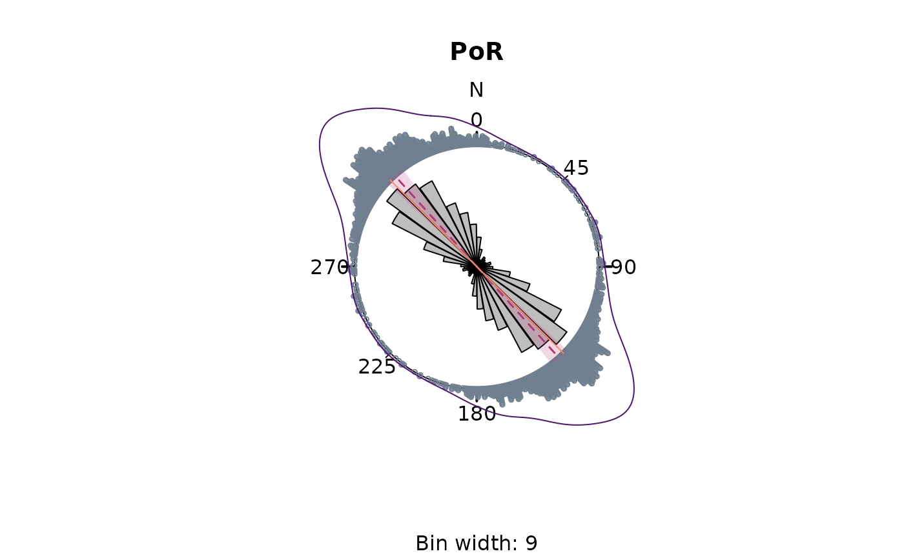
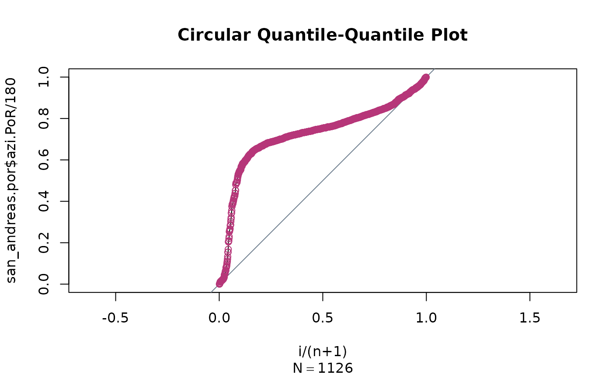

4. Circular statistics
Tobias Stephan
2025-11-06
Source:vignettes/D_statistics.Rmd
D_statistics.RmdThis vignette teaches you how to retrieve the mean direction of stress datasets.
Mean direction
Directional data is
-periodical.
Thus, for the calculation of mean, the average of 35 and
355
should be 15 instead of
195.
tectonicr provides the circular mean
(circular_mean()) and the quasi-median
(circular_median()) as metrics to describe average
direction:
data("san_andreas")
circular_mean(san_andreas$azi)
#> [1] 10.64134
circular_median(san_andreas$azi)
#> [1] 35.5Quality weighted mean direction
Because the stress data is heteroscedastic, the data with less precise direction should have less impact on the final mean direction The weighted mean or quasi-median uses the reported measurements linear weighted by the inverse of the uncertainties:
w <- weighting(san_andreas$unc)
circular_mean(san_andreas$azi, w)
#> [1] 10.85382
circular_median(san_andreas$azi, w)
#> [1] 35.53572The spread of directional data can be expressed by the standard deviation (for the mean) or the quasi-interquartile range (for the median):
circular_sd(san_andreas$azi, w) # standard deviation
#> [1] 23.84385
circular_IQR(san_andreas$azi, w) # interquartile range
#> [1] 35Statistics in the Pole of Rotation (PoR) reference frame
NOTE: Because the orientations are subjected to angular distortions in the geographical coordinate system, it is recommended to express statistical parameters using the transformed orientations of the PoR reference frame.
data("cpm_models")
por <- cpm_models[["NNR-MORVEL56"]] |>
equivalent_rotation("na", "pa")
san_andreas.por <- PoR_shmax(san_andreas, por, type = "right")
circular_mean(san_andreas.por$azi.PoR, w)
#> [1] 139.7927
circular_sd(san_andreas.por$azi.PoR, w)
#> [1] 22.49684
circular_median(san_andreas.por$azi.PoR, w)
#> [1] 135.6247
circular_IQR(san_andreas.por$azi.PoR, w)
#> [1] 25.89473The collected summary statistics can be quickly obtained by
circular_summary():
circular_summary(san_andreas.por$azi.PoR, w, mode = TRUE)
#> n mean sd var 25% quasi-median
#> 1126.0000000 139.7927014 22.4968398 0.2653334 123.5288513 135.6247317
#> 75% median mode CI skewness kurtosis
#> 149.4235849 137.4843360 138.0821918 5.4144480 -0.2890426 1.6306589
#> R
#> 0.7346666The summary statistics additionally include the circular quasi-quantiles, the variance, the skewness, the kurtosis, the mode, the 95% confidence angle, and the mean resultant length (R).
Rose diagram
tectonicr provides a rose diagram, i.e. histogram for angular data.
rose(san_andreas$azi,
weights = w, main = "North pole",
dots = TRUE, stack = TRUE, dot_cex = 0.5, dot_pch = 21
)
# add the density curve
plot_density(san_andreas$azi, kappa = 20, col = "#51127CFF", scale = 1.1, shrink = 2, xpd = NA)
The diagram shows the uncertainty-weighted frequencies (equal area rose fans), the von Mises density distribution (blue curve), and the circular mean (red line) incl. its 95% confidence interval (transparent red).
Showing the distribution of the transformed data gives the better representation of the angle distribution as there is no angle distortion due to the arbitrarily chosen geographic coordinate system.
rose(san_andreas.por$azi,
weights = w, main = "PoR",
dots = TRUE, stack = TRUE, dot_cex = 0.5, dot_pch = 21
)
plot_density(san_andreas.por$azi, kappa = 20, col = "#51127CFF", scale = 1.1, shrink = 2, xpd = NA)
# show the predicted direction
rose_line(135, radius = 1.1, col = "#FB8861FF")
The green line shows the predicted direction.
QQ Plot
The (linearised) circular QQ-Plot (circular_qqplot())
can be used to visually assess whether our stress sample is drawn from
an uniform distribution or has a preferred orientation.
circular_qqplot(san_andreas.por$azi.PoR)
Our data clearly deviates from the diagonal line, indicating the data is not randomly distributed and has a strong preferred orientation around the 50% quantile.
Statistical tests
Test for random distribution
Uniformly distributed orientation can be described by the von Mises distribution (Mardia and Jupp, 1999). If the directions are distributed randomly can be tested with the Rayleigh Test:
rayleigh_test(san_andreas.por$azi.PoR)
#> Reject Null Hypothesis
#> $R
#> [1] 0.7118209
#>
#> $statistic
#> [1] 570.5317
#>
#> $p.value
#> [1] 1.664245e-248Here, the test rejects the Null Hypothesis
(statistic > p.value). Thus the
directions have a preferred orientation.
Alternative statistical tests for circular uniformity are
kuiper_test() and watson_test(). Read
help() for more details…
Test for goodness-of-fit
Assuming a von Mises Distribution (circular normal distribution) of the orientation data, a confidence interval can be calculated (Mardia and Jupp, 1999):
confidence_interval(san_andreas.por$azi.PoR, conf.level = 0.95, w = w)
#> $mu
#> [1] 139.7927
#>
#> $conf.angle
#> [1] 5.414448
#>
#> $conf.interval
#> [1] 134.3783 145.2071The prediction for the orientation is . Since the prediction lies within the confidence interval, it can be concluded with 95% confidence that the orientations follow the predicted trend of .
The (weighted) circular dispersion of the orientation angles around the prediction is another way of assessing the significance of a normal distribution around a specified direction. It can be measured by:
circular_dispersion(san_andreas.por$azi.PoR, y = 135, w = w)
#> [1] 0.1377952The value of the dispersion ranges between 0 and 2.
The standard error and the confidence interval of the calculated circular dispersion can be estimated by bootstrapping via:
circular_dispersion_boot(san_andreas.por$azi.PoR, y = 135, w = w, R = 1000)
#> $MLE
#> [1] 0.2649406
#>
#> $sde
#> [1] 0.01123333
#>
#> $CI
#> [1] 0.2418236 0.2860227The statistical test for the goodness-of-fit is the (weighted) Rayleigh Test with a specified mean direction (here the predicted direction of :
weighted_rayleigh(san_andreas.por$azi.PoR, mu = 135, w = w)
#> Reject Null Hypothesis
#> $C
#> [1] 0.7244095
#>
#> $statistic
#> [1] 34.37703
#>
#> $p.value
#> [1] 8.045524e-256Here, the Null Hypothesis is rejected, and thus, the alternative, i.e. an non-uniform distribution with the predicted direction as the mean cannot be excluded.
References
Mardia, K. V., and Jupp, P. E. (Eds.). (1999). “Directional Statistics” Hoboken, NJ, USA: John Wiley & Sons, Inc. doi: 10.1002/9780470316979.
Ziegler, Moritz O., and Oliver Heidbach. 2017. “Manual of the Matlab Script Stress2Grid” GFZ German Research Centre for Geosciences; World Stress Map Technical Report 17-02. doi: 10.5880/wsm.2017.002.